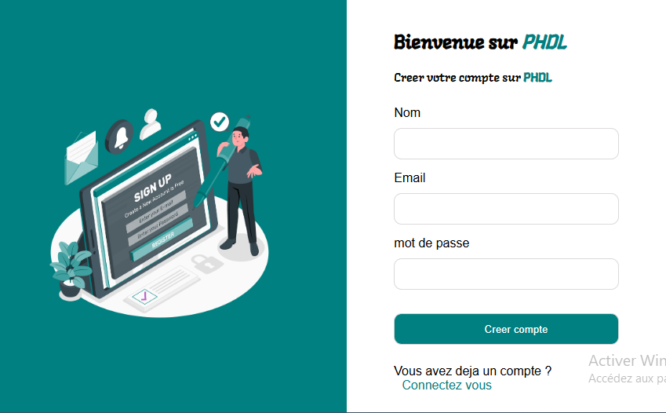

Cette partie a pour but principale de vous evaluez sur la Connaissance des concepts de base du langage PHP , la création d'une base de donnee et l'interaction avec cette dernière en utilisant le langage SQL . Vous devez reproduire exactement la maquete presenter ci dessous en respectant les marges , les couleurs et la position des elements . Puis implementer le scénario suivant :
🔐 Seul les utilisateurs possedant un compte devront acceder a la page de bienvenue
🔐 la création de compte devrait se faire depuis le formulaire de création de compte , les mots de passe devront être hacher dans la BD et l'utilisateur devrait être rediriger vers le formulaire de connexion après la création de compte
🔐 Une fois sur le formulaire de connexion l'utilisateur devrait être rediriger vers la page de bienvenue si les informations sont correct et afficher un message d'erreur sur la page de connexion dans le cas contraire
🔐 Une fois sur la page d'acceuil , l'utilisateur devrait voir un message de bienvenue suivi de son nom
